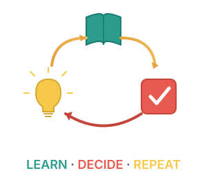

Operating Principles
"The pleasure of finding things out."
Foundation
Three traits drive everything I do. Curiosity is the drive to learn and understand — seeking out new challenges and unfamiliar territory. Action is the bias toward trying — start, experiment, learn from what happens. Rigor is the insistence on systematic feedback — actively seeking what could prove you wrong. These three reinforce each other. Curiosity asks questions, action explores answers, rigor filters what works. Together, they turn effort into results.
Iteration

One principle unifies how I work: Learn · Decide · Repeat. Every cycle builds on the last. Learn means understanding how things actually work. Decide means acting despite remaining uncertainty. Repeat means feeding outcomes back into the next cycle. The faster you close the loop, the faster you compound what you know into what you do.
Leverage
Two mechanisms multiply my impact. Speed reduces cycle time — tighter feedback, less friction, automating what repeats. Scale increases reach — building systems that last, creating standards others can follow, turning expertise into tools. Speed without scale doesn't move the needle. Scale without speed doesn't learn fast enough. Together, they amplify learning into impact.